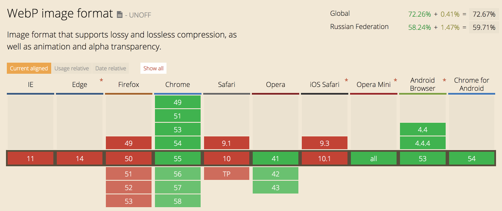
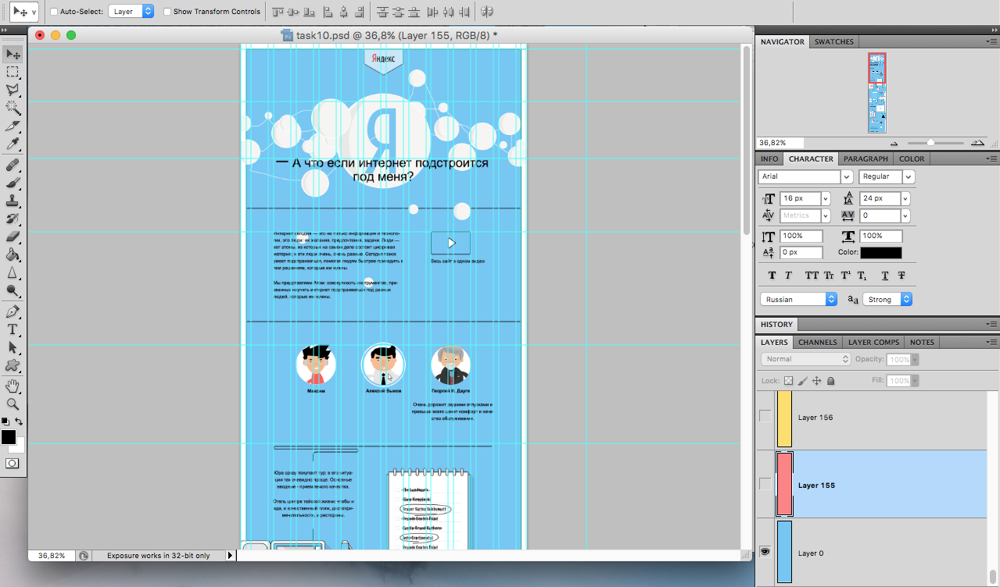
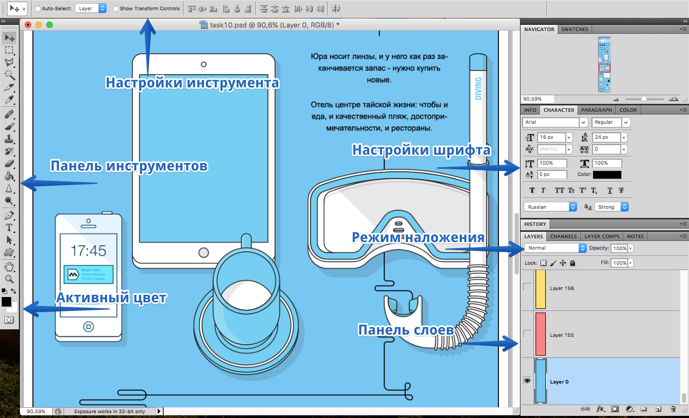
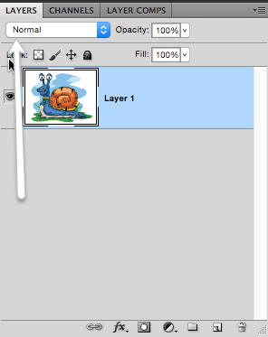

Графика
Кувалдин Артем
Разработчик интерфейсов

Виды графики
Графический формат — это способ записи графической информации.
Векторная графика |
Растровая графика |

|

|
Векторная графика
– это изображения, созданные при помощи математических описании элементарных геометрических объектов:
- Точки
- Линии и ломаные линии
- Многоугольники
- Окружности и эллипсы
- Кривые Безье
- Текст

Недостатки векторной графики
- большое количество описательной информации для сложных объектов
- недостаточная реалистичность векторного изображени
- грузит CPU
Растровая графика
Изображение по вертикали и горизонтали разбивается на достаточно мелкие прямоугольники – пикселы.

Разрешение

Глубина цвета
– определяет то количество оттенков, в диапазоне которых точка может изменять свой цвет.

| Глубина цвета (битов) | Количество цветов |
|---|---|
| 2 | 22 = 4 |
| 4 | 24 = 16 |
| 8 | 28 = 256 |
| 16 | 216 = 65 536 |
| 24 | 224 = 16 777 216 |
1 бит / 24 бита

Индексированный цвет

Плюсы растрового изображения:
- высокая реалистичность изображения
- позволяет воспроизвести изображение любой сложности
Минусы растрового изображения:
- плохо масштабируются
- изображение можно редактировать только целиком
- зачастую может иметь больший размер, чем аналог векторного изображения
в вектор – 1.98 KБ, а в растре – 51 КБ
Цветовые модели
Цветовая модель
— математическая модель описания представления цветов в виде кортежей чисел (обычно из трёх, реже — четырёх значений).

RGB
– кодирует любой цвет, представляя в виде комбинации трех цветов (каналов): красного (Red), зеленого (Green) и синего (Blue), с разной интенсивностью.

Интенсивность каждого из трех цветов – это один байт (т. е. число в диапазоне от 0 до 255):
- Белый цвет r=255; g=255; b=255
- Красный цвет r=255; g=0; b=0
- Желтый цвет r=255; g=255; b=0
- Черный цвет r=0; g=0; b=0

RGB в CSS
a:hover {
/* rgb(red, green, blue);*/
color: rgb(255, 0, 0);
/*color: rgb(100%, 0, 0);*/
}a:hover {
/*Шестнадцатиричная запись*/
color: #ff0000;
}a:hover {
/*Короткая запись(
*/
color: #f00;
}RGBA
Похож по синтаксису на RGB, но включает в себя альфа-канал, задающий непрозрачность элемента (0 – прозрачный, 1 – непрозрачный).
red-box:hover {
background: rgba(255, 0, 0, .5);
}Имена цветов
В CSS существует 140 зафиксированных имен
- red
- black
- green
- darkmagenta
- orangered
- springgreen
- yellowgreen
- slategrey
- transparent
CMYK
Данная модель является вычитающей, поскольку цвета в ней образуются путем вычитания из черного цвета базовых цветов: голубого (Cyan), пурпурного (Magenta), желтого (Yellow).

HSV
(Hue, Saturation, Value)
- Hue — цветовой тон (оттенок цвета, от 0 до 360).
- Saturation — насыщенность. Чем выше этот параметр, тем «чище» будет цвет, а чем ниже, тем ближе он будет к серому (0 – 100%).
- Value — яркость цвета. Чем выше значение, тем ярче будет цвет. А чем ниже, тем темнее (0% — черный, 100% – яркий)

HSV
Чаще всего используется в простой обработке изображений.

HSL
(Hue, Saturation, Lightness)
- Hue — цветовой тон (оттенок цвета, от 0 до 360).
- Saturation — насыщенность. Чем выше этот параметр, тем «чище» будет цвет, а чем ниже, тем ближе он будет к серому (0 – 100%).
- Lightness — это светлота цвета (не путать с яркостью). Чем выше параметр, тем светлее цвет (100% — белый), а чем ниже, тем темнее (0% — черный).
HSL
Преимуществом HSL перед RGB является то, что HSL является гораздо более понятным. Кроме того, с помощью него легче создать палитры подходящих цветов (сохраняя оттенок и меняя яркость и насыщенность)

HSL в CSS
.span-1 {
color: hsl(0, 0%, 100%);
}
.span-2 {
color: hsl(0, 100%, 50%);
background-color: hsl(120, 100%, 50%);
}
.span-3 {
color: hsl(30, 100%, 0%);
background-color: hsl(60, 100%, 100%);
}span-2
span-3
HSLA в CSS
Формат HSLA похож по синтаксису на HSL, но включает в себя альфа-канал, задающий непрозрачность элемента.
.box {
background-color: hsla(120, 100%, 50%, 1);
}
.box:hover {
background-color: hsla(120, 100%, 50%, .5);
}LAB
Её цветовой охват максимально близок к восприятию человека с нормальным зрением.
- L — Luminance — освещенность (это совокупность яркости и интенсивности)
- a — один из компонентов цвета, меняется от зеленого до красного
- b — второй из компонентов цвета, меняется от синего до желтого

SVG
SVG (Scalable Vector Graphics)
— язык разметки масштабируемой векторной графики
SVG в HTML5
В настоящий момент формат SVG поддерживается 96.67% браузеров.
Форматы растровой графики
BMP (Bitmap Picture)
- c форматом BMP работает огромное количество программ
- можно сохранять черно-белые, серые полутоновые, индексные цветные и цветные изображения системы RGB
- большой объем
 15.6 MB
15.6 MB
GIF (Graphics Interchange Format)
- анимации
- однобитовая прозрачность
- индексная палитра
- стандарт разрабатывался только для поддержки 256-цветовой палитры
 365B
365B 2KB
2KB

| BMP | GIF |
| 15.6 MB | 860 KB |
JPEG (Joint Photographic Experts Group)
применяемый для хранения фотоизображений и подобных им изображений
- может хранить изображения с глубиной цвета 24 бит
- progressive JPEG позволяет сохранять изображения с выводом за указанное количество шагов
- появление на изображениях при высоких степенях сжатия характерных артефактов
- форматом не поддерживаются анимация и прозрачный цвет


| BMP | GIF | JPEG |
| 15.6 MB | 860 KB | 980 KB |


Множественное сохранение

https://clck.ru/AMF7p
PNG (Portable Network Graphics)
- альфаканал
- обладает более высокой степенью сжатия для файлов с большим количеством цветов
- пересохранение изображения проходят без потерь в качестве.
- цветное индексированное изображение (палитра 8 бит для цвета глубиной 24 бит)
- не подходит для фотографий


| BMP | GIF | JPEG | PNG |
| 15.6 MB | 860 KB | 980 KB | 4.9MB |
PNG vs GIF
| png-8 | gif |

|

|
| 16 KB | 17 KB |
WebP
– обеспечивает сжатие изображений как с потерями, так и без потерь.

| BMP | GIF | JPEG | PNG | WebP |
| 15.6 MB | 860 KB | 980 KB | 4.9MB | 450KB |
WebP
- Меньший размер файла
- Улучшенный алгоритм сжатия
- Более качественный переходы цвета
- Маска альфа-канала
- Искажение имеет пластиковый вид
Поддержка
Архивация и компрессия
-
Архивация(сжатие без потерь) – программа анализирует наличие в сжимаемых данных некоторых одинаковых последовательностей данных(одного цвета, повторяющиеся текстовые данные), и исключает их, записывая вместо повторяющегося фрагмента ссылку на предыдущий такой же.
- RLE
- CCITT
- LZW
- ZIP
-
Компрессия(сжатие с потерями) – это способ сохранения данных таким образом, при использовании которого не гарантируется полное восстановление исходных графических данных.
- JPEG
- JPEG 2000 (jp2)
Инструменты сжатия
 JPEGmini
JPEGmini
 imageOptim
imageOptim
 imgo (node.js)
imgo (node.js)
tiny png (online, plugin photoshop, API)
Оптимизация SVG
– заключается в удалении «ненужной» информации из SVG, тем самым уменьшается размер самого файла.
- SVG Cleaner
- SVG Scour (для работы необходимо установить Python)
- SVG Optimizer (для работы необходимо установить Node.js)
https://clck.ru/8qdWP
До сжатия
После сжатия
<svg version="1.2" baseProfile="tiny" xmlns="http://www.w3.org/2000/svg" viewBox="0 0 100 100" height="300"><circle stroke="#f00" stroke-width="2" stroke-miterlimit="10" cx="50" cy="50" r="40"/></svg>
0.614 KiB – 68.2% = 0.195 KiB
Графический редактор


Работа с макетом
Photoshop имеют расширение *.psd
Отключение направляющих View -> Extras или ⌘+H
Рабочая область
Своя рабочая область
Window -> Workspace -> New Workspace ...

Панели для разработчика
- Layers — панель слоёв — папки и слои макета.
- Character — данные о выделенном текстовом слое или тексте (шрифт, цвет, размер, интерлиньяж и другое).
- Info — панель информации. Цвета, положении курсоров по координатам и при выделении — размер выделенного фрагмента.
- History — панель истории

Вид слоев
Panel Options.. ->
Горячие клавиши

Горячие клавиши
- ⌘ – в сочетании с клавишами '0' (подогнать масштаб под размер окна), '1' (установка масштаба 100%), '+' (увеличение), '-' (уменьшение)
- ⌘+Z – отменить/применить последнее изменение
- ⌘+ALT+Z – отмена последних действий (назад по истории)
- Tab – скрывает/открывает сразу все рабочие панели
Слои


Layer Comps
инструмент используется для запоминания состояний.
View –> Layer Comps

Выбор слоёв
Зажать ⌘ (выбор Move Tools) + кликнуть на изображение.
Включить Auto–Select
- Выбрать Move Tools (V)
- в левом верхнем углу поставить галку "Auto–Select"

Показать и скрыть
Показать один слой – зажать Alt и нажать на "глазик".
 двойной клик по эффекту вызовет панель с настройками эффекта
двойной клик по эффекту вызовет панель с настройками эффекта
Поговорить с дизайнером
Если наложение отлично от Normal – нужно поговирить с дизайнером.
Другие инструменты
- Eyedropper Tool – узнать цвет пикселя.
- Ruler Tool – линейка (Info -> Panel Options -> Ruler Units -> Pixels).
- Rectangle Marquee Tool – прямоугольная область выделения.
⌘ + D убрать выделенную область.
Сохранение графики
⌘+Alt+Shift+S или через меню "File" -> "Save for Web...

О чем подумать при работе с макетом
- О структуре будущей верстки
- О деградации (для более старых браузеров)
- О шрифтах, используемых в макете
- О реальных данных
- Отступы важны
PixelPerfect
https://clck.ru/AMKCx
Цвет в браузере

Графика в HTML
Важно указывать размеры картинок, чтобы зарезервировать место под картинку.

Графика в CSS
.box1 {
background-image: url(yandex.png);
}Размеры фона
.box1 {
background-image: url(yandex.png);
/*background-size: 100% auto;*/
background-size: 100%;
}Размеры фона
.box1 {
background-image: url(yandex.png);
/*Можно указывать значение в px*/
background-size: 100% 100%;
}cover/contain
.box1 {background-image: url(yandex.png);
background-size: cover;
}
.box2 { background-image: url(yandex.png);
background-size: contain;
}Повторение картинок
.box-0 {
background-repeat: repeat; /*по умолчанию*/
}
.box1 {
background-repeat: no-repeat;
}
.box2 {
background-repeat: repeat-x;
}
.box3 {
background-repeat: repeat-y;
}Положение фона
.box1 {background-image: url(yandex.png);
/*left | center | right | <проценты> | <значение>*/
/*top | center | bottom | <проценты> | <значение>*/
background-position: 75% 50%;
}
https://clck.ru/AMT8o
background-position: 100% 0;background-position: 100% 100%;background-position: 0 100%;background-position: 0 0;Фиксация фона
.box1 {
background-image: url(yandex.png);
/*scroll | fixed | local*/
background-attachment: fixed
}Цет переднего плана
.box {
color: #f00;
background: currentColor;
box-shadow: 0 0 55px currentColor;
}Область позиционирования
– определяет область позиционирования фонового рисунка
.box { border: 10px solid red; padding: 20px; }
.box1 { background-origin: border-box; }
.box2 { background-origin: padding-box; }
.box3 { background-origin: content-box; }Короткая запись
/* background: <bg-image> ||
<position> [ / <bg-size> ]? || <repeat-style> ||
<attachment> || <'background-color'>*/
.box {
background: url(image.png) 50% 10% / 50px 80px
no-repeat #290;
}Линейные градиенты
.box {
background: linear-gradient(#f00,#0f0);
}.box {
background: linear-gradient(45deg, #ff0 0, #f00 30%, #0f0 30%);
}Радиальные градиенты
.box {
background: radial-gradient(#fff,#00f);
}background: radial-gradient(100px 200px at 100px 10px,
#fff 0%,#f00 50%,#00f 100%);Шаблоны
background: linear-gradient(135deg, #ECEDDC 25%, rgba(0, 0, 0, 0) 25%) -50px 0,
linear-gradient(225deg, #ECEDDC 25%, rgba(0, 0, 0, 0) 25%) -50px 0,
linear-gradient(315deg, #ECEDDC 25%, rgba(0, 0, 0, 0) 25%),
linear-gradient(45deg, #ECEDDC 25%, rgba(0, 0, 0, 0) 25%);
background-size: 100px 100px;
background-color: #EC173A;Спрайты
Спрайты
– прием объединить много изображений в одно.

https://clck.ru/AMSoM(генератор)
https://clck.ru/AMSoR(css-sprite)
Спрайты в css
Нужно сделать кнопки "поделиться"
.social {
width: 100px;
height: 100px;
background-repeat: no-repeat;
background-image: url(share.svg)
}
.fb {
background-position: 0 0;
}
.fb:hover {
background-position: 0 -100px;
}
.twitter {
background-position: -100px 0;
}
.twitter:hover {
background-position: -100px -100px;
}Как это работает?
Особенности:
- Меньше запросов к серверу
- Смена по hover
- Сложно добавлять новые картинки (но можно автоматизировать)
Мультики

.cartoon {
width: 50px;
height: 72px;
background-image: url(sprite.png);
animation: sprite 1s steps(9) infinite;
}
@keyframes sprite {
100% { background-position-x: 100%; }
}Base64
– способ оптимизации загрузки изображения.

.logo {
background: url(data:image/svg+xml;base64,PHN2ZyB4bWxucz0iaHR0cDovL3d3dy53My+);
}
- отсутствие запроса к серверу
- картинка не кэшируется
- увеличение размера файла (css/html)
- "мусор" в коде
Стоит почитать
Спасибо